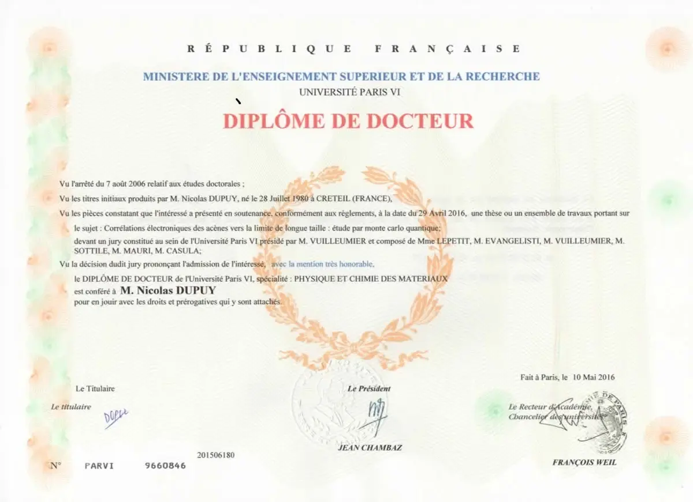
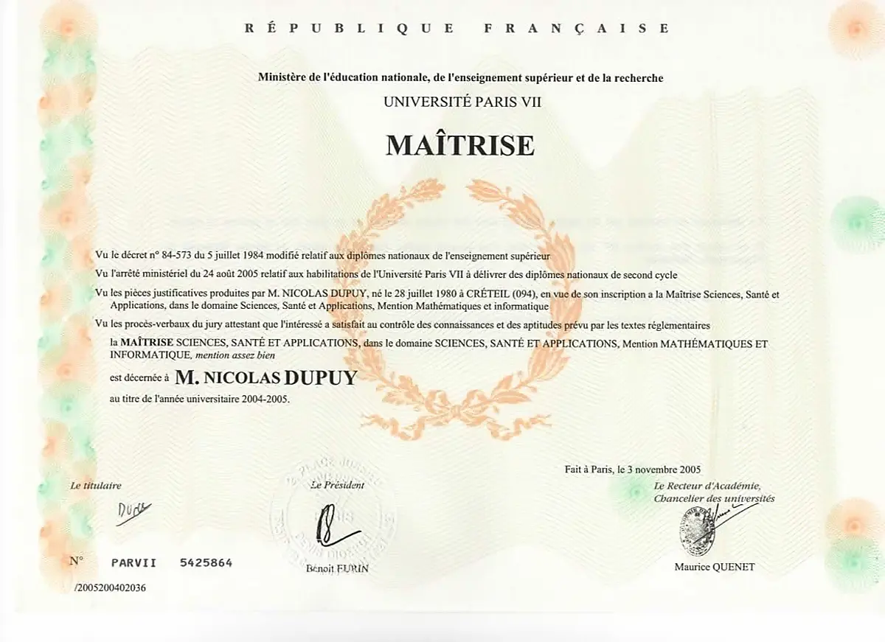

Hi, I'm Nicolas, an independent researcher and a lecturer in data science. I split this page into subsections, Academic and Miscellaneous, the best I could considering my very non-linear path.
Welcome! A first note about this Beta preview.
This website gives an overview of my digital R&D services. Since my immediate priority is to signal my availability, I designed a minimal version subject to improvement.
We read a lot about the PhD capabilities of AI systems, and I also have underused PhD capabilities I want to bring. Neuroatypism has been my main obstacle to traditional workflows, so I have structured one adapted to my autism spectrum profile, eliminating traditional friction through mostly asynchronous work, administrative tasks delegated to an Employer of Record/umbrella company, and milestone-conditioned delivery.
Since I work with two levels of energy (low and high), my services cover a spectrum of different complexities. When I am low for demanding research, I can always tackle your backlog of data processing; there is always something I can process to accelerate your work.
I will refine this website over time to make it more human, better explained, and to include a more personal section. Working within two energy regimes constantly, I also develop this platform with two corresponding levels of refinement; humanizing it slowly by sharing my passions is, for me, a way to recharge my energy while engaging with intellectually curious peers.
Philosophy of my venture
I am Nicolas, the independent researcher running this support service in research and data science.
I offer a modular menu of services, from scientific research to data science, providing external support for tasks that your team needs to offload.
I built this framework around a ticket-based system inspired by software engineering, designed to adapt to my fluctuating workload limits as a researcher on the autism spectrum. Payment is made upon deliverables through an Employer of Record, making the entire collaboration thought to be plug-and-play.
In more detail:
What I do in a few lines:
- Clearance of latent projects & Engineering backlogs: I take ownership of your accumulated research and data science workloads. This includes exploring secondary hypotheses left aside or extending your team's capacity for urgent computational work. I operate as a domain-agnostic researcher.
- Value-Based Milestones: We break down the technical roadmap into project tickets together, assigning a fixed value and estimated timelines to each milestone. From there, I manage my schedule with full autonomy. We keep each other informed through asynchronous updates, eliminating formal meeting overhead.
- Adaptive Execution: I handle work streams ranging from baseline data exploration to specialized numerical simulations or theoretical exploration. My workflow adapts with my cognitive availability, channeling peak focus into complex mathematical research while deploying linear data processing to maintain steady operational momentum.
Research as a passion: Years ago, I did not believe I could become a researcher, despite a good academic record. I maintained my presence at the university because I loved learning, and I eventually got a PhD opportunity. Supporting technical teams is my way to partner with excellent researchers on compelling projects, allowing me to keep learning while contributing to their progress, and to push beyond my doctoral studies.
Leveraging my learning momentum: I am an academic bookworm. This is mostly how I studied: I worked as a home teacher, then bought piles of textbooks and research books. I never stopped. Today, with digital media from historical institutions like the Collège de France or Stanford, my study list is longer than a child's Christmas list (which is how I call it). The intense focus associated with autism is not a legend. When I develop an obsession, I do not do things halfway. This gives me the momentum to perform high-quality, focused work for prolonged durations.
Cross-disciplinary dynamics: Unlike conventional research trajectories that mandate extreme specialization within a single domain, I thrive on exploring multiple fields. While this would be a constraint in a permanent academic position, my independent framework turns this need for variety into an asset. It allows me to apply my mathematical skills agnostically across diverse sectors, migrating analytical tools between finance, medicine, theoretical physics, and applied data pipelines.
"Autism spectrum disorders (ASD) are a diverse group of conditions. They are characterized by some degree of difficulty with social interaction and communication. Other characteristics are atypical patterns of activities and behaviours, such as difficulty with transition from one activity to another, a focus on details and unusual reactions to sensations," according to the WHO, which estimates a prevalence of around 1 in 127 in the global population.
What about in academia? While there are no direct global census statistics on prevalence within academia, Simon Baron-Cohen published an article in 2001 measuring the average Autism-Spectrum Quotient across different populations. On a scale of 0 to 50, where the general population averages 16.4 (± 6.4) and the clinically diagnosed autistic population averages 35.8 (± 6.5), students in mathematics scored 21.5 (± 6.5), slightly lower than 16 UK Olympiad winners (24.5 ± 5.7).
When looking at autism at work, data from specialized organizations like the National Autistic Society and the UK Office for National Statistics (ONS) reveal that autism presents the lowest employment rate among all disability categories, with only about 21.7% of autistic adults in meaningful employment (data from 2020), just below adults with severe learning disabilities.
Yet, the autism spectrum covers a wide range of situations and intellectual levels. Dr. Neil Kenny gathered valuable testimony from academics in Irish higher education ("Tell me what my job is": A Qualitative Exploration of the Experiences of Autistic Academic Staff working in Higher Education in Ireland), and I can add mine. If you read it, here are a few themes addressed:
- Receiving a diagnosis lifts a significant weight: Indeed, to me, it felt like being a rabbit that landed by accident in a family of cats, finally being told that even though I love them, minor adaptations like refraining from hunting birds or wandering at night would make my life much better.
- Time perception is drastically different between neurodivergent and neurotypical people, and even between two autistic individuals. In the study, one participant describes being able to focus on a single task for hours without realizing time is passing, while another needs breaks more often than their colleagues. I am right in the middle of that: I loved chess competitions when I was 17 years old, with day-long games starting at 9 am that could last up to 8 hours. I attempted one of the toughest admission exams for the École Normale Supérieure (ENS); since I did not follow the traditional path, I had terrible results, but I thoroughly enjoyed the challenge. Yet, even for a task I excel at, if my mind is clouded by toxic thoughts, my perception of time is completely inverted.
- Routines and organisation: We all have our own routines, and organisation can be messy. To me, multitasking is like trying to juggle multiple clubs, and having even two deadlines, even very distant ones, can completely freeze me.
- Masking: Back to being a rabbit in the middle of the family of cats that adopted you. You love them, you want to spend time and do things with them, but they have instincts that you don't have. So you try to do the same via an unconscious copying mechanism, but your mind screams at you that it's in pain. It's often the main cause of exhaustion, leading to burnout.
- Sensory overload: I add it as a critical cause of exhaustion and burnout. When fatigued in crowded public spaces, repeated announcements while waiting for a train, motor backfires, or scanner beeps at the supermarket checkout force our brains to work constantly, as if we were actively processing data.
- More in return for our troubles: Sure, being an autistic person makes life complicated, but I wouldn't want to be any different. Participants in the study praise their hyperfocus and their drive to go deeper into their passions. I, too, would never want to lose the joy of learning logical things with such intensity.
Services
🌱 Starting Phase: your feedback is important to better match your needs
You will find here my list of services, which I might extend over time when I start studying something new. These are designed primarily to bring you skills that I have been developing through continuous learning over the years, across multiple academic paths.
To ensure a predictable, highly professional, and stress-free collaboration for both of us, I apply a consistent framework across most of these modules:
💼
Administrative Ease
Native usage of an Employer of Record (EOR) or French portage salarial to handle all contracts, invoices, and compliance seamlessly.
✅
Risk-Free Milestones
Payment occurs strictly after milestone validation, taking inspiration from ticket and backlog functioning in modern IT companies.
📥
Backlog Unloading
Highly designed to absorb your data processing backlogs and secondary hypotheses, unloading the tasks your core team lacks the time to execute.
🧩
Tailored Cognitive Pace
Wide range of complexity, from junior tasks to deep research. This allows me, as a researcher on the autism spectrum, to manage my time and cognitive load depending on my current focus capacity.
Have a custom requirement outside this standard catalog?
✉️ Contact: nicolas0dupuy@gmail.comScientific Computing & Numerical Simulation
Technical and theoretical support for exploration, code implementation, simulations of physical systems, and mathematical modeling. Delivered primarily remotely, with optional on-site contributions.
Projects are structured into independent milestones with clear definitions and endpoints, ensuring each deliverable can be easily tracked and integrated by any team member.
Milestones can be a theoretical exploration or an algorithm implementation, and constitute the basis for the elements billed at completion, which protects your budget. The price is agreed upon for each milestone and doesn't change if I need extra time, providing you with stability and predictability, while giving me reduced pressure and the opportunity for quality learning time.
This structure is designed to assist teams or researchers in clearing pending side projects and evaluating alternative hypotheses while your main teams focus on their primary projects.
Long partnerships can be anticipated to secure the benefits of my learning curve, as I'm actively learning numerical methods at the entry research level.
Quantum Chemistry & Materials Modeling
Molecular modeling, electronic or geometric structure calculations, and quantum simulations for ground and excited states, including DFT and Quantum Monte Carlo workflows. Delivered primarily remotely, with optional on-site contributions.
Projects are structured into independent milestones with clear definitions and endpoints, ensuring each deliverable can be easily tracked and integrated by any team member.
Milestones can be simply an electronic structure DFT optimisation (in a batch of molecules to be explored) or the theoretical exploration of alternative methods, and constitute the basis for the elements billed at completion, which protects your budget. The price is agreed upon for each milestone and doesn't change if I need extra time, providing you with stability and predictability, while giving me reduced pressure and the opportunity for quality learning time.
This structure is designed to assist teams or researchers in clearing pending side projects and evaluating alternative hypotheses while your main teams focus on their primary projects.
Long partnerships can be anticipated to secure the benefits of my learning curve, as I actively adapt my existing computational workflows to your specific research problems.
Personal Note
I completed my PhD (2012–2016) in computational physics, focusing on the Quantum Monte Carlo optimization of graphene-like molecules, ground-state electronic structures, singlet/triplet excited states, and the geometry of strongly correlated systems. While I have not yet deployed Molecular Dynamics pipelines or integrated Machine Learning into traditional physics workflows, I am eager to learn, implement, and adapt these methods for your projects. Aside from my passion for physics, I also developed an early interest in Quantum Computing. I completed the 'Quantum Computing Fundamentals' and 'Quantum Computing Realities' professional certificate programs from MITxPRO, and am eager to contribute to the development of this field.
Numerical Methods in Quantitative Finance
Implementation and validation of numerical models, stochastic simulations, and mathematical frameworks for quantitative finance. Delivered primarily remotely, with optional on-site contributions.
Projects are structured into independent milestones with clear definitions and endpoints, ensuring each deliverable can be easily tracked and integrated by any team member.
Milestones can be a Value-at-Risk (VaR) estimation, a batch of data to prepare, engineer, or analyse, or a theoretical model to explore, and constitute the basis for the elements billed at completion, which protects your budget. The price is agreed upon for each milestone and doesn't change if I need extra time, providing you with stability and predictability, while giving me reduced pressure and the opportunity for quality learning time.
This structure is designed to assist teams or researchers in clearing pending side projects and evaluating alternative hypotheses while your main teams focus on their primary projects.
Long partnerships can be anticipated to secure the benefits of my learning curve, as I actively specialize in quantitative finance methods, building on my quantitative research background.
Personal Note
I actively began specializing in quantitative finance methods last year, building on seven years of teaching Data Science at the Paris School of Business in close contact with financial professionals. My next personal milestone is to collaborate with active researchers and practitioners to train by doing. Partnering allows you to train a long-term collaborator who will deeply understand your environment. Given the scarcity of solid quantitative talent in today's market, this partnership allows you to bypass the difficult search for rare graduate profiles and secure a PhD-level researcher with proven analytical maturity. I gladly accept entry-level tasks while learning the basics, and as a seasoned lecturer, I can also contribute to training your interns with my freshly acquired knowledge. Positioning myself at the interface between researchers and practitioners, do not hesitate to reach out if you need a connector. I focus my European contributions on France, my home country, and the Nordics & Baltics, which are my favorite regions.
Convex Optimization & Mathematical Programming
Formulation and resolution of optimization problems (such as LP, QP, SOCP, SDP) under physical or operational constraints. Delivered primarily remotely, with optional on-site contributions.
Projects are structured into independent milestones with clear definitions and endpoints, ensuring each deliverable can be easily tracked and integrated by any team member.
Milestones can be the translation of physical or operational constraints into a convex programming model, or a benchmarking suite comparing different solvers on a dataset, and constitute the basis for the elements billed at completion, which protects your budget. The price is agreed upon for each milestone and doesn't change if I need extra time, providing you with stability and predictability, while giving me reduced pressure and the opportunity for quality learning time.
This structure is designed to assist teams or researchers in clearing pending side projects and evaluating alternative hypotheses while your main teams focus on their primary projects.
Long partnerships can be anticipated to secure the benefits of my learning curve, as I continuously refine my practical mastery through Stephen Boyd's frameworks.
Personal Note
I started studying convex optimization only recently as an extension of my interest in numerical methods. I take Stephen Boyd's publicly available lectures and textbook as a starting point, alongside Yang Zheng's algorithmic lecture notes and the classic work by Ben-Tal and Nemirovski, Lectures on Modern Convex Optimization. Partnering early secures an increasingly specialized optimization contributor to model your operational and physical bottlenecks. If you need expertise I do not have yet, do not hesitate to inform me to set objectives in skill acquisition, so I can support you in completing tasks where you lack a qualified workforce.
Computer Vision Research
Technical and theoretical support for the development of computer vision algorithms, mathematical foundations, and numerical implementations, spanning classical geometric approaches, machine learning architectures, and generative models. Delivered primarily remotely, with optional on-site contributions.
Projects are structured into independent milestones with clear definitions and endpoints, ensuring each deliverable can be easily tracked and integrated by any team member.
Milestones can range from a basic image processing task or the algorithmic implementation of a research paper, to a mathematical audit of a theoretical framework, and constitute the basis for the elements billed at completion, which protects your budget. The price is agreed upon for each milestone and doesn't change if I need extra time, providing you with stability and predictability, while giving me reduced pressure and the opportunity for quality learning time.
This structure is designed to assist teams or researchers in clearing pending side projects and evaluating alternative hypotheses while your main teams focus on their primary projects.
Long partnerships can be anticipated to secure the benefits of my learning curve, as I quickly adapt my mathematical skills to your specific vision problems.
Personal Note
I discovered computer vision after the deep learning boom, and its underlying mathematics quickly fascinated me. I followed online the first year of the Computer Vision Master's program from HSE University (interrupted by the outbreak of the war in Ukraine) and completed Stanford's CS236 generative models course in 2021. I am equally passionate about classical methods that leverage foundational mathematics and methods derived from machine learning. For reference, some textbooks I consult in my practice include Szeliski's Computer Vision: Algorithms and Applications and Gonzalez & Woods' Digital Image Processing. Furthermore, my academic background includes various levels of differential geometry—including Riemannian, Symplectic, and Lie groups—which provides a solid geometric perspective when working on high-dimensional visual data or invariant architectures.
Computer Vision Applications
Practical implementation of computer vision workflows for industrial automation, quality control, and data preprocessing, using classical image processing and machine learning models. Delivered primarily remotely, with optional on-site contributions.
Projects are structured into independent milestones with clear definitions and endpoints, ensuring each deliverable can be easily tracked and integrated by any team member.
Milestones can range from building an OpenCV preprocessing pipeline for image filtering and alignment to writing a custom feature-matching script or deploying a lightweight pretrained model, and constitute the basis for the elements billed at completion, which protects your budget. The price is agreed upon for each milestone and doesn't change if I need extra time, providing you with stability and predictability, while giving me reduced pressure and the opportunity for quality learning time.
This structure is designed to assist teams or researchers in clearing pending side projects and evaluating alternative hypotheses while your main teams focus on their primary projects.
Long partnerships can be anticipated to secure the benefits of my learning curve, as I actively expand my practical toolkit with industrial-grade software libraries.
Personal Note
Although primarily a theoretician, I have actively worked toward becoming a computer vision practitioner for the past five years. I began by completing early computer vision courses on platforms like Coursera, Udacity, and LearnOpenCV, before accelerating my training by enrolling in the online Master's program at HSE University—an effort unfortunately interrupted by the outbreak of the invasion of Ukraine. I offer these services to complement my theoretical background with hands-on experience, framing my contribution as a backlog-clearance support service where your financial risk is entirely eliminated by milestone-based payments.
Data Engineering & Reporting
Development of data processing pipelines, intelligence dashboards, and data quality audits. Delivered primarily remotely, with optional on-site contributions.
Projects are structured into independent milestones with clear definitions and endpoints, ensuring each deliverable can be easily tracked and integrated by any team member.
Milestones can range from writing a custom Python script to clean and unify different datasets to writing SQL queries in Google BigQuery, or building an automated dashboard, and constitute the basis for the elements billed at completion, which protects your budget. The price is agreed upon for each milestone and doesn't change if I need extra time, providing you with stability and predictability, while giving me reduced pressure and the opportunity for quality learning time.
This structure is designed to assist data or IT teams in clearing pending data backlogs and building operational dashboards while your core teams focus on their primary daily workflows, but also to assist non-specialist teams in developing their initial infrastructure.
Long partnerships can be anticipated to secure the benefits of my learning curve, as I am eager to contribute to your projects until we achieve noticeable and quantifiable results.
Personal Note
I have been teaching Data Science and database fundamentals at the Paris School of Business since 2019, while continuously sharpening my skills on platforms like DataCamp and Coursera since their early days. I eventually began lecturing at other renowned institutions to teach data in highly specialized contexts, such as cybersecurity and finance. I offer this service to take pending backlog tasks off your team’s plate—such as data preparation or basic pipelines—as it provides me with core, hands-on experience that directly feeds my personal R&D.
Applied Statistics & Hypothesis Testing
Formulation of experimental designs, hypothesis testing, statistical validation, and extracting underlying patterns from multivariate or high-dimensional datasets. Delivered primarily remotely, with optional on-site contributions.
Projects are structured into independent milestones with clear definitions and endpoints, ensuring each deliverable can be easily tracked and integrated by any team member.
Milestones can range from designing the statistical framework of an upcoming experiment to performing a validation audit on the assumptions of an existing model, or conducting a complete hypothesis test on a key dataset, and constitute the basis for the elements billed at completion, which protects your budget. The price is agreed upon for each milestone and doesn't change if I need extra time, providing you with stability and predictability, while giving me reduced pressure and the opportunity for quality learning time.
This structure is designed to assist teams encountering quantitative problems (such as in finance, medical research, or meteorology) in validating hypotheses and clearing analysis backlogs. It is adapted in particular to companies and teams that need only fractional scientific validation.
Long partnerships can be anticipated to secure the benefits of my learning curve, as I am currently extending my statistics foundations, in particular through quantitative finance.
Personal Note
My foundation in statistics comes from Physics, when I learned Statistical Physics, and developed particularly during my PhD, where the Monte Carlo methods used for my simulations required careful statistical validations. Lecturing at the Paris School of Business with work-study contract students drove me to understand how to apply statistics in multiple business situations to produce the content of my lectures. I'm particularly eager to help teams gain efficiency by refining their analysis with a better evaluation of the uncertainty in it.
Applied Machine Learning & Predictive Modeling
Training and comparing predictive models, organizing datasets, and transitioning machine learning workflows to cloud platforms. Delivered primarily remotely, with optional on-site contributions.
Projects are structured into independent milestones with clear definitions and endpoints, ensuring each deliverable can be easily tracked and integrated by any team member.
Milestones can range from benchmarking several model architectures (like Scikit-Learn or XGBoost) on your dataset, to preparing a dataset in BigQuery, or moving a model training script to a Google Cloud Platform (GCP) environment, and constitute the basis for the elements billed at completion, which protects your budget. The price is agreed upon for each milestone and doesn't change if I need extra time, providing you with stability and predictability, while giving me reduced pressure and the opportunity for quality learning time.
This structure is designed to assist R&D or data teams in prototyping predictive workflows and testing alternative model architectures while your core engineers focus on maintaining stable production systems.
Long partnerships can be anticipated to secure the benefits of my learning curve, and they can be efficiently paired with my other data or specialized services, allowing us to discuss how I can help you achieve quantifiable results.
Personal Note
I discovered modern Machine Learning methods within the Scikit-Learn library, together with modern data science methods, after my PhD graduation in 2016, and specialized in it, as I wanted to get ready if I was to be proposed an engineer position in a Physics lab, but I eventually got lectures before. I blend a passion for Machine Learning with those of numerical methods and data science. Currently, I'm preparing for the Google Cloud certification as a Machine Learning Engineer to be able to help non-specialist teams of any domain (I personally think a lot about cultural heritage, museums, and galleries) get intuitive data-based tools to assist them in their speciality.
Deep Generative Modeling & Mathematical Representations
Development of deep generative architectures, research on their theoretical frameworks or architecture development. Can be applied to analyze high-dimensional signals, model unknown probability distributions, or solve physical inverse problems. Delivered primarily remotely, with optional on-site contributions.
Projects are structured into independent milestones with clear definitions and endpoints, ensuring each deliverable can be easily tracked and integrated by any team member.
Milestones can range from building and testing a deep generative architecture (such as Variational Autoencoders, Normalizing Flows, or Diffusion models) on your data, auditing the foundations (such as derivation of the KL-divergence or exploring invariant representations) to ensure the model converges toward the desired target, or producing a generative model capturing the statistics of a dataset (useful for data privacy when a dataset needs to be deleted, so you can produce a synthetic version to analyse trends post-deletion), and constitute the basis for the elements billed at completion, which protects your budget. The price is agreed upon for each milestone and doesn't change if I need extra time, providing you with stability and predictability, while giving me reduced pressure and the opportunity for quality learning time.
This structure is designed to assist R&D teams, researchers (including medical researchers or those in the cultural heritage domain), in validating mathematical hypotheses or prototyping neural network architectures, without adding headcount. It is also suited to professionals in fields where data needs to be deleted periodically for privacy reasons (medical or consumer data).
Long partnerships can be anticipated to secure the benefits of my learning curve, and they can be efficiently paired with my other data or specialized services, allowing us to discuss how I can help you achieve quantifiable results.
Personal Note
I discovered Generative Models in 2021 when I decided to take Stefano Ermon's online course, CS236 (Deep Generative Models), at Stanford. For the record, I didn't submit my final project because my lectures at PSB and other schools didn't leave much time for it (and I shied away, idolizing Stanford students, whom I find impressive), but I still got a C based solely on the theory and coding problems, and I took it with some pride, considering that reaching a C with only 75% of the total grade available was not too bad. For a suburban French boy, being a Stanford student was a late revenge that raised my confidence (and a bit of my English level too!). Nowadays, I have started viewing and studying Stéphane Mallat's lessons at the Collège de France (while reviewing CS236's newest lectures, now publicly available) to complement my theoretical understanding of generative models with optimal transport aspects.
Medical Image & Biological Data, Sports Science & Signal Analysis / Research Support
Preprocessing, cleaning, and exploratory analysis of medical & biological datasets, including imaging such as MRI DICOM files and biosignals such as ECG & EEG. Delivered primarily remotely with an on-site option.
Projects are structured into independent milestones with clear definitions and endpoints, ensuring each deliverable can be easily tracked and integrated by any team member.
Milestones can range from data preprocessing tasks to research assistance, such as exploring imaging or signal extraction methods, developing generative models, or setting up privacy-aware statistical data capture to retain key insights from datasets that must be deleted for privacy compliance (see the Deep Generative Modeling & Mathematical Representations service). These milestones constitute the basis for the elements billed at completion, which protects your budget. The price is agreed upon for each milestone and doesn't change if I need extra time, providing you with stability and predictability, while giving me reduced pressure and the opportunity for quality learning time.
This structure is designed to assist clinical R&D teams, medical researchers, or digital health startups who need specialized analytical support, freeing up their clinicians and senior researchers.
Long partnerships can be anticipated to secure the benefits of my learning curve, as I am passionate about biology and medical science, and I learn continuously through hands-on practice.
Personal Note
I am a beginner in clinical environments, but I love exploring human physiology. I learn even from basic tracking of my cardiac data during treadmill sessions using a Polar H10 belt, and am proud to report a maximum heart rate estimated around 180 bpm, a second ventilatory threshold around 164 bpm, and post-effort recovery decay averaging a drop of 25 to 30 bpm per minute (I’m as proud of my physical condition at 46 as I am of how my understanding of the heart improved through self-research and experimentation!). I’m also a proud "lab experiment" for three studies on autism (one EEG recording of reaction times to compare autistic and non-autistic people, one about prosody, and one about perception of art through an eye tracker), and I would love to be on the researchers’ side to help!
Digital Imaging for Cultural Heritage
Numerical preservation, spectral analysis, and high-quality digital showcase solutions for fine arts, galleries, and cultural institutions.
Projects are structured into independent milestones with clear definitions and endpoints, ensuring each deliverable can be easily tracked and integrated by any team member.
Milestones can range from the digitization of a photograph or a painting to research support, such as digitally restoring a damaged painting by fusing historical photographs, or performing spectral analysis to detect traces of past restoration. These milestones constitute the basis for the elements billed at completion, which protects your budget. The price is agreed upon for each milestone and doesn't change if I need extra time, providing you with stability and predictability, while giving me reduced pressure and the opportunity for quality learning time.
This structure is designed to assist museum curators, art conservators, private galleries, and heritage institutions who need dedicated computational support to digitize, analyze, or virtually showcase their collections without adding long-term technical overhead.
Long-term collaborations are particularly valuable, as they provide the time needed to study the physical and mathematical challenges specific to your collections and preservation workflows.
Personal Note
I give credit to Professor Robert Erdmann for my desire to explore the field of computer imaging applied to cultural heritage. His work on the ultra-high-definition digitization of Rembrandt's The Night Watch is extremely impressive, as one can zoom in on a one-millimeter-wide crack in the painting. Museums and galleries have special atmospheres precious to me as an autistic person. I want to share my gratitude here for my favorite museums and galleries: the Kumu Art Museum and Fotografiska in Tallinn, Estonia, and the National Museum of Finland in Helsinki.
Signal Processing & Time Series Analysis
Mathematical signal analysis, time-frequency representations, and algorithmic extraction of patterns from time-dependent datasets. Delivered primarily remotely, with optional on-site contributions.
Projects are structured into independent milestones with clear definitions and endpoints, ensuring each deliverable can be easily tracked and integrated by any team member.
Milestones can range from analyzing time-dependent datasets to implementing a discrete wavelet transform to denoise a sensor signal, constructing localized time-frequency spectrograms for feature extraction, or designing anomaly detection frameworks on financial time series. These milestones constitute the basis for the elements billed at completion, which protects your budget. The price is agreed upon for each milestone and doesn't change if I need extra time, providing you with stability and predictability, while giving me reduced pressure and the opportunity for quality learning time.
This structure is designed to assist quantitative research teams, medical device startups, or engineering teams dealing with noisy, time-dependent physical measurements who need specialized mathematical support to extract meaningful patterns without adding permanent technical overhead.
Long partnerships can be anticipated to secure the benefits of my learning curve, as I deepen my understanding of signal processing and transforms by combining library study with practical application.
Personal Note
My core understanding of signal processing mostly comes from my background in fundamental mathematics, through functional analysis and spectral transforms. I designed this service so that I can efficiently support research teams while extending my knowledge by studying the work of researchers such as Stéphane Mallat or Ingrid Daubechies in the field of wavelet transforms or other research in functional analysis.
Research Interfacing, Technology Transfer & Collaboration Facilitation
Building bridges: between academia (universities, schools) and industry (startups, banks), between France and the rest of the world, and between distant academic institutions, for any project that would benefit from a scientifically skilled co-ambassador.
Unlike my other services, which are strictly structured around preset milestones, here we define our objectives and discuss how we work on a case-by-case, situation-by-situation basis.
Personal Note
I designed this service primarily because of my love for foreign languages (from my French perspective). I have been seeking opportunities to be involved in partnership-building on behalf of the schools where I lecture, especially to build bridges between Paris and Tallinn. I have already taken initial steps in this direction, which has introduced me to extraordinary people. Since I intend to offer my skills to multiple partners across various domains, there is a good chance that we can build some great synergies over time!
Biography
Academics
My studies started in 1998 with my high-school graduation to end in 2016 with my PhD defense. It included, but was not limited to, three main themes: Physics, Mathematics, and Languages. I’ll talk a bit about what I did, but exclude most of the chaotic years.
Physics

My PhD research involved numerical investigations of the electronic ground states (primarily) and excited states (secondarily) of a molecular family called acenes. Acenes are a family of linear molecules whose structure can be seen as a thin stripe of a graphene nanoribbon. We focused on electron and spin densities and correlations to better understand spin correlations in graphene-like materials, which can have applications to fields such as solar energy.
Prof. Casula is an expert in Quantum Monte Carlo methods and a researcher with an impressive capacity to focus on dozens of things at the same time. He was a challenging and uncompromising advisor who taught me to do science, while I was only in a solving-textbook-problems mindset before. I feel very lucky to have worked with him.
Mathematics

A brief context note about French schools. We have an elite alternative to the standard university track called Classes Préparatoires aux Grandes Écoles. To draw a parallel with the USA: these Grandes Écoles can be compared to the Ivy League universities. Students prepare challenging exams for two years in the Classes Préparatoires (and often take a third year for a better school), then engage in a marathon of competitive tests.
My dream institution was the École Normale Supérieure (ENS), likely the most selective among them, with Polytechnique. I discovered it too late to apply for a Classe Préparatoire, but decided to try it anyway as an independent applicant. So I was competing against future potential Nobel prize winners, relying on my textbook self-study (and it didn’t work, but I enjoyed trying!).
The Licence de Mathématiques offered the closest match to the Classes Préparatoires. During those years, my curriculum covered:
- Two Algebra courses: foundations, followed by ring structures and Galois theory (roughly corresponding to the first half of Part II in Serge Lang's Algebra)
- Foundational Topology
- Differential Calculus
- Integration and Measure Theory
- Differential Equations and Differential Geometry
- Spectral and Fourier Analysis
- Dynamical Systems and Lie Groups
(This summary excludes the domains I studied later through independent research, such as probability theory and numerical methods.)
Languages
My setback at the ENS brought my morale down, so, alongside my maîtrise de mathématiques, I enrolled at INALCO to study Russian.
I became absorbed in studying the Russian language, so it began to take too much of a precedence over mathematics. And so it took me two years to complete my maîtrise because I had to retry a couple of exams (I don’t regret it either!).
My grammar lecturer awakened a passion for poetry in foreign languages. Poetry frequently motivates me to begin a new language. When I started Estonian, I discovered Jaan Kaplinski, who remains one of my favourite poets. It’s even an addiction: I read something interesting about a culture, want to know a bit about it, research just a bit, promise myself not to dig any deeper, do it anyway, then add a new pile of books to my nightstand.
Miscellaneous
Languages
I begin by talking about my passion with a disclaimer: I know many languages very badly. It’s a passion, not a collection to brag about, but since I started it more than twenty years ago, I have accumulated a lot of experience that I sometimes think I can use.
So, briefly. It started with Russian, with two years at university, and continued on my own (it will always be the case, so I don’t need to specify anymore). Then, the first two languages I started completely on my own were Czech and Hungarian, planning a trip there. During the first one, it was a disaster when I tried to talk to people, but the next year was better. My High-School foreign languages were German and English, so I resumed them next, and added Italian on the way, because of a friend, and went to a summer school there. For seven years, I’ve been learning Estonian, starting at a school in Saaremaa, and a few years ago, I started learning Swedish and a bit of Chinese. That’s not it, but those are the ones I’m the most active in.
Yet, I benefit from the pros and cons of being on the spectrum. I can learn Estonian or Swedish poetry during my commute, using my phone as a dictionary, now using AI tools to explain symbolism or history, but meanwhile, it’s not always easy for me to communicate, and I’m often stuck when I get anxious.
Data Science & Machine Learning
I started to learn data science online on Coursera because it was emerging in France at the time I finished my PhD, and it was a fascinating new field, demonstrating how to use those methods on public data to discover things about any topic. Maths enthusiasts have easy access to plenty of new methods, interesting in themselves to study, but also to easily do numerical research even from home.
Computer Vision
After a couple of deep learning tutorials on classic architectures, such as Andrew Ng’s deep learning course, I wanted to dig deeper into this field and not be limited to machine learning methods, because legacy algorithms have fascinating mathematical foundations, especially in geometry, using Fourier transformations, or differential calculus.
Generative Models
In 2021, I had saved enough money to take a course on Stanford Online, and I chose CS236. At the time, it was somewhat of a way of taking a late revenge on my ENS failure and feeling like a student of an Ivy League university. I didn’t have the right personality to bond with my classmate online, to voice out on the forum, ask questions, so I didn’t get more than if I read a book, but I had an early teaching from one of the leading experts in the field, and he was fascinating. Now I’m passionate about it.
Finance
I discovered a late interest in financial mathematics from lecturing in business schools. I’m interested in computing values at risk of portfolios using machine learning methods (PCA and normalizing flows). Meanwhile, I discovered that it was less complicated than I thought to invest according to my personal values, especially investing in northern Europe.
Personal Note
I discovered Scientific Computing during my Master's internship preceding my PhD research. During those periods, I applied multiple quantum chemistry methods (which I propose in the service Quantum Chemistry & Materials Modeling), and the mathematician in me already wanted to understand their foundations. I offer this service because my continuous learning in this domain, combined with my experience, can find multiple uses in both industry and academia, where additional hands-on support is often lacking. For reference, some readings I consult in my practice include: Quarteroni et al.'s Numerical Mathematics, Grégoire Allaire's Analyse numérique et optimisation (Éditions de l'École Polytechnique), Mallat's books and lectures on wavelets, and Pohjolainen's Mathematical Modeling.